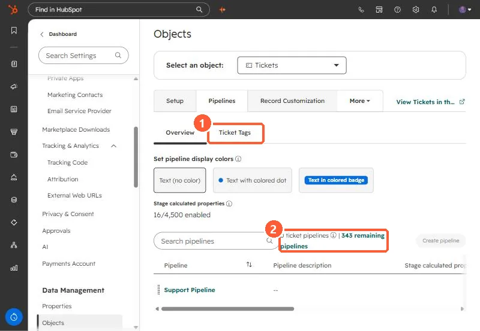
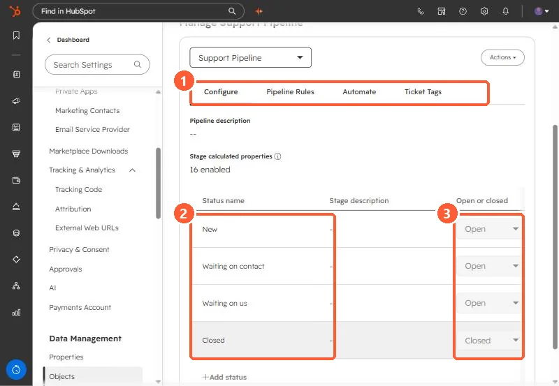

Short answer
Ticket pipelines live in Settings, Objects, Tickets, Pipelines. My demo's Support Pipeline has four statuses: New, Waiting on contact, Waiting on us (all Open), and Closed (Closed). Each status is marked open or closed, which drives reports and time-to-close. HubSpot says if a contact replies to an existing thread on a closed ticket, the ticket moves to the first open status in the pipeline.
1. The pipelines list
Open ticket pipeline settings.


Tickets have their own tags tab, like deals. See deal tags for how tags work.
2. Statuses
Click the pipeline. The Configure tab lists statuses, each with an open or closed setting.


- New, Waiting on contact, Waiting on us: open.
- Closed: closed.
- Further right are Used in, Conditional logic rules, Pipeline rules, stage calculated properties, and Status ID.
3. Status automation
On the Automate tab, HubSpot can change a ticket's status when an email is sent from the ticket or a customer replies. HubSpot says status will not change for forwarded emails or replies sent from a user's personal connected email, and a reply on a closed ticket reopens it to the first open status.